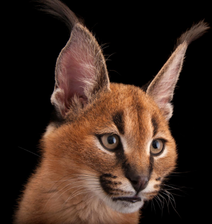

DOGS
DOGS
CATS


DOGS |
DOGS |
CATS |
|---|---|---|
| |
|
 |
COMMON NAME: Domestic Dog
SCIENTIFIC NAME: Canis familiaris
TYPE: Mammals
DIET: Omnivore
GROUP NAME: Pack
SIZE: Height at the shoulder: 6 to 33 inches
WEIGHT: 3 to 175 pounds
SIZE RELATIVE TO A 6-FT MAN:
The dog is a domesticated carnivoran of the family Canidae. It is part of the wolf-like canids, and is the most widely abundant terrestrial carnivore Dogs were probably the first tame animals. They have accompanied humans for at least 20,000 years and possibly as many as 40,000. Scientists generally agree that all dogs, domestic and wild, share a common wolf ancestor; at some point grey wolves and dogs went on their separate evolutionary ways. Dog Breeds Today humans have bred hundreds of different domestic dog breeds—some of which could never survive in the wild. Despite their many shapes and sizes all domestic dogs, from Newfoundlands to pugs, are members of the same species—Canis familiaris. Although they have domestic temperaments, dogs are related to wolves, foxes, and jackals.
The Affenpinscher is square-proportioned, compact and sturdy, with medium bone. This breed is a smaller version of a working terrier, and as such is not a delicate dog. This is an active, tough dog that is agile enough to catch and dispatch rodents. The gait is light, sound, and confident. The Affenpinscher has a monkey-like facial expression with long eyebrows and beard, which lends an air of comic seriousness. The rough coat is about 1 inch long on the body, somewhat longer on the head, neck, chest, stomach and legs. This coat type provided protection from pests and harsh conditions.